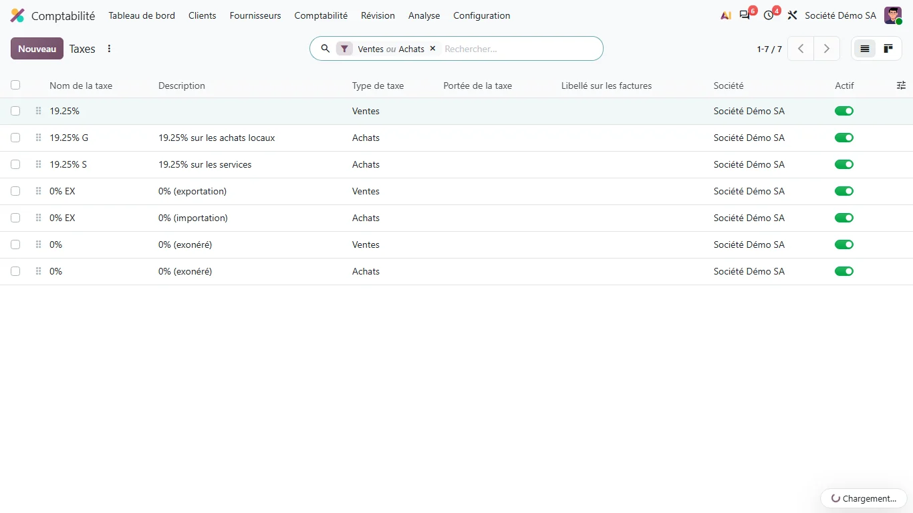
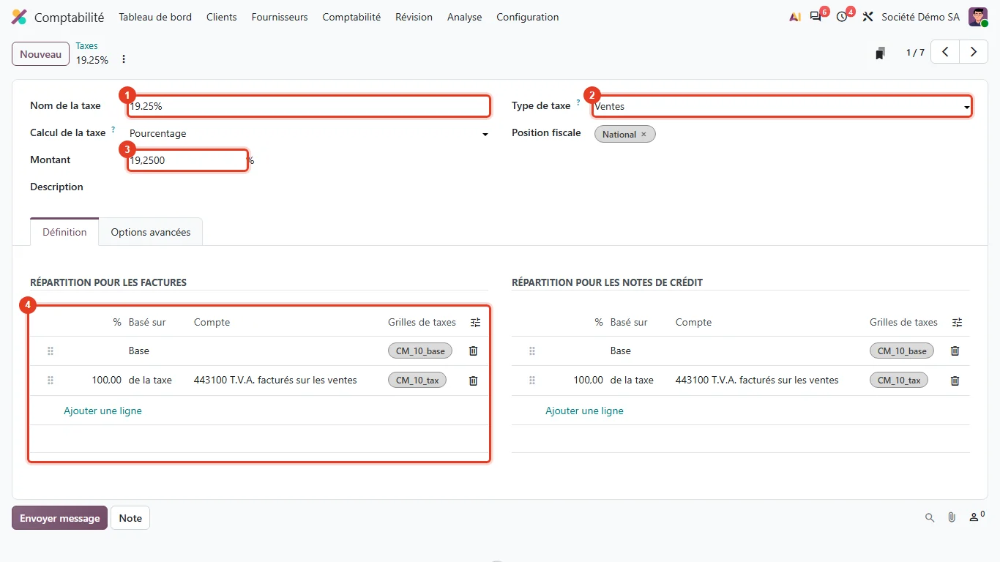

Paramétrer les taxes (TVA ventes, achats et export)
Objectif. Que chaque facture porte la bonne TVA sur le bon compte.
Menu Odoo 15Comptabilité > Configuration > Taxes
Étapes
- Ouvrez la taxe ou cliquez sur Nouveau : nom (1), portée (2) Ventes ou Achats, montant (3) (19,25 %).
- Onglet Définition (4) : choisissez le compte de TVA (collectée sur ventes, déductible sur achats).
- Ventes : TVA collectée sur prestations ; créez une taxe 0 % pour l'export.
- Achats : une taxe par nature (biens, services, immobilisations), chacune sur son compte 445.
- Reportez la taxe sur les articles (onglet Comptabilité) et testez sur une facture en brouillon.


À vérifier
- Une facture test montre la TVA sur le bon compte 443 ou 445.
À éviter
- Ne modifiez pas le taux d'une taxe déjà utilisée : créez-en une nouvelle et archivez l'ancienne.
Exercice
Créez une taxe d'achat « TVA déductible services 19,25 % ».